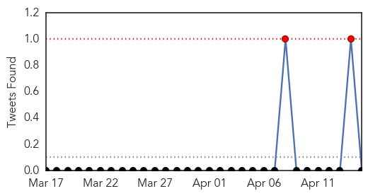
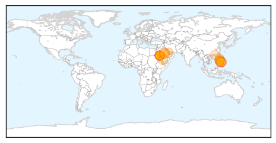

Dengue Fever
30-Day Web Trend
5 alerts, 2 warnings

30-Day Twitter Trend
5 alerts, 0 warnings

Article Locations

Article Confidences

Top Articles:
- 0.991
- Precautions against vector-borne diseases highlighted during World Health Day
- 0.989
- Pitt CVR and Sanofi Pasteur collaborate to assess the effectiveness of a dengue vaccine
- 0.977
- More than 600 malaria cases reported in Qatar last year
- 0.946
- Epidemic control: Hospitals told to send dengue patients’ data to Health Department
- 0.791
- Centre reports dengue cases
- 0.780
- Solomon Islands Flooding – UNICEF Responds to Urgent Water and Sanitation Needs - Solomon Islands
- 0.695
- International Atomic Energy Agency
- 0.578
- Evacuation centres in Solomons struggling to cope - UNICEF
Top Tweets:
-
No tweets found for Apr 15, 2014
MERS
30-Day Web Trend
5 alerts, 0 warnings

30-Day Twitter Trend
0 alerts, 0 warnings

Article Locations
Article Confidences

Top Articles:
- 0.999
- Govt makes efforts to find cure for CoV
- 0.998
- Yemen reports first case of deadly MERS-coronavirus
- 0.997
- Fatal MERS Virus Outbreak Surges Throughout Middle East
- 0.996
- MERS claims foreigner
- 0.996
- DOH: No travel restrictions despite MERS virus cases
- 0.995
- Mers coronavirus: Filipino paramedic who died in UAE infected 10 colleagues, says the WHO
- 0.995
- DFA Advises Filipinos in the Middle East to Take Necessary Precautions to Avoid MERS-CoV Infection (Department of Foreign Affairs of the Republic of the Philippines)
- 0.993
- MERS claims first victim in Yemen
- 0.993
- Despite MERS, no travel restrictions to and from Middle East, only advice for precautions
- 0.993
- Gov’t urged to provide medical assistance to OFWs in Middle East « Bulatlat
- 0.992
- OFWs in Middle East warned on spread of MERS
- 0.988
- Phl won't restrict Middle East travel despite cases of coronavirus
- 0.988
- Foreigner dies of MERS in Jeddah
- 0.985
- Gov’t won’t impose travel ban on Middle East
- 0.984
- Jeddah residents told to guard against MERS
- 0.983
- MERS under control, says Saudi Arabia
- 0.980
- MERS under control, says Saudi Arabia
- 0.963
- No travel restrictions to Middle East despite MERS
- 0.950
- Tempo - News in a Flash
- 0.793
- Sars Research Lab Loses 2,000 Tubes of Killer Virus
- 0.609
- Saudi- MERS under control Cabinet told
Top Tweets:
-
No tweets found for Apr 15, 2014